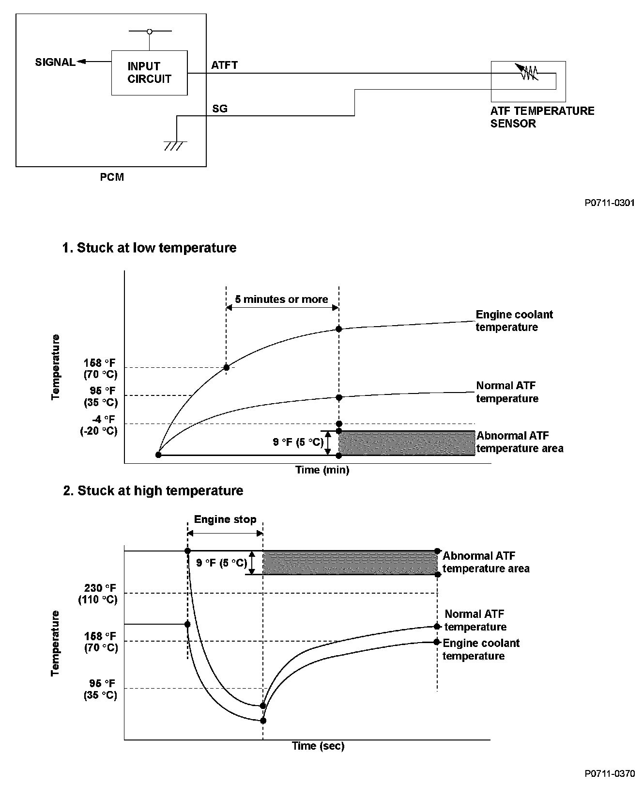
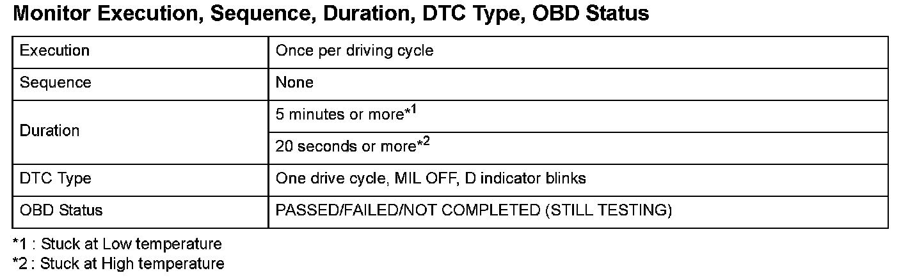
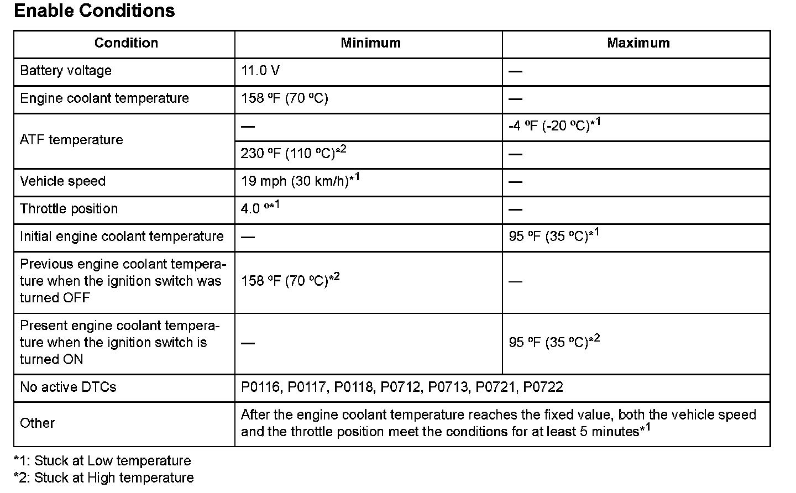

Advanced Diagnostics
DTC P0711: Problem in ATF Temperature Sensor Circuit
General Description
The ATF temperature sensor is a thermistor type sensor whose resistance changes according to the change in ATF temperature. The powertrain control module (PCM) sends a 5 V reference voltage to the grounded sensor through a pull-up resistor. When the ATF temperature is low, the sensor resistance increases and the PCM detects a high signal voltage. As the ATF temperature rises, the sensor resistance decreases and the PCM detects a low signal voltage.
If the ATF temperature sensor signal does not change, the PCM detects a malfunction and a DTC is stored.

Monitor Execution, Sequence, Duration, DTC Type, OBD Status

Enable Conditions
Malfunction Threshold
1. Stuck at Low temperature
The ATF temperature rise is 9 °F (5 °C) or less after the ignition switch is turned ON, and the current ATF temperature is -4 °F (-20 °C) or less for at least 5 minutes.
2. Stuck at High temperature
The ATF temperature drop is -9 °F (-5 °C) or less after the ignition switch is turned OFF, and the current ATF temperature is 230 °F (110 °C) or more for at least 20 seconds.
Driving Pattern
1. Stuck at Low temperature
Start the engine with engine coolant temperature at 95 °F (35 °C) or less, and warm up the engine until the engine coolant temperature reaches 158 °F (70 °C) or more. Then drive the vehicle at a speed of 19 mph (30 km/h) or more with the throttle position at 4.0 ° or more for at least 5 minutes.
2. Stuck at High temperature
Turn off the engine with the engine coolant temperature at 158 °F (70 °C) or more. Restart the engine after the engine coolant temperature drops to 95 °F (35 °C) or less, and warm up the engine until the engine coolant temperature reaches 158 °F (70 °C), and wait for at least 20 seconds.
- Drive the vehicle in this manner only if the traffic regulations and ambient conditions allow.
Diagnosis Details
Conditions for illuminating the indicator
When a malfunction is detected, the D indicator blinks, and the DTC and the freeze frame data are stored in the PCM memory. The MIL does not come on.
Conditions for clearing the DTC
The DTC and the freeze frame data can be cleared by using the scan tool Clear command or by disconnecting the battery.